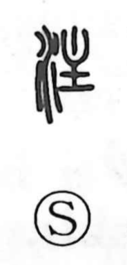

注

Uncategorized
Kun: sosogu, sasu, tsugu | On: chuu
to pour ・ to concentrate ・ annotation
Explanation
注 is a phono-semantic character: the water element hints at liquid and pouring, while 主 supplies the sound (as it does in 柱) and originally depicted a tallow lamp—a small dish with a burning flame. In early understanding, it evoked the act of pouring tallow into that lamp. From this concrete scene the meaning broadened to the general “to pour,” and, by the image of bringing the vessel close to the lamp’s dish, it also took on the sense of attaching or adding something. This is the idea behind 注釈, an annotation: words appended to a main text to clarify it. The Shuowen already glosses 注 as “to pour,” preserving that earliest, practical core.